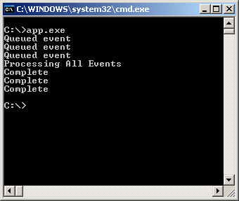
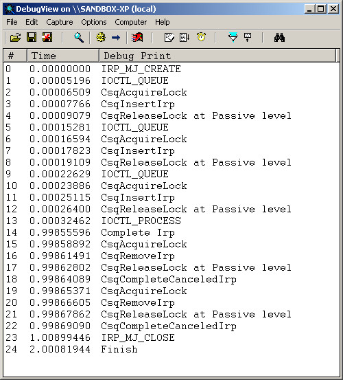

參考資訊：
https://wasm.in/
http://four-f.narod.ru/
https://github.com/steward-fu/ddk
http://www.delphibasics.info/home/delphibasicsprojects/delphidriverdevelopmentkit
main.c
#include <ntddk.h>
#define IOCTL_QUEUE CTL_CODE(FILE_DEVICE_UNKNOWN, 0x800, METHOD_BUFFERED, FILE_ANY_ACCESS)
#define IOCTL_PROCESS CTL_CODE(FILE_DEVICE_UNKNOWN, 0x801, METHOD_BUFFERED, FILE_ANY_ACCESS)
#define DEV_NAME L"\\Device\\MyDriver"
#define SYM_NAME L"\\DosDevices\\MyDriver"
KDPC stDPC = { 0 };
IO_CSQ stCsq = { 0 };
KTIMER stTime = { 0 };
KSPIN_LOCK stLock = { 0 };
LIST_ENTRY stQueue = { 0 };
void CsqInsertIrp(struct _IO_CSQ *pCsq, PIRP pIrp)
{
DbgPrint("CsqInsertIrp");
InsertTailList(&stQueue, &pIrp->Tail.Overlay.ListEntry);
}
void CsqRemoveIrp(PIO_CSQ pCsq, PIRP pIrp)
{
DbgPrint("CsqRemoveIrp");
RemoveEntryList(&pIrp->Tail.Overlay.ListEntry);
}
void CsqCompleteCanceledIrp(PIO_CSQ pCsq, PIRP pIrp)
{
DbgPrint("CsqCompleteCanceledIrp");
pIrp->IoStatus.Status = STATUS_CANCELLED;
pIrp->IoStatus.Information = 0;
IoCompleteRequest(pIrp, IO_NO_INCREMENT);
}
PIRP CsqPeekNextIrp(PIO_CSQ pCsq, PIRP pIrp, PVOID PeekContext)
{
PIRP pNextIrp = NULL;
PLIST_ENTRY pList = NULL;
PLIST_ENTRY pNext = NULL;
PIO_STACK_LOCATION psk = NULL;
pList = &stQueue;
if (pIrp == NULL) {
pNext = pList->Flink;
}
else {
pNext = pIrp->Tail.Overlay.ListEntry.Flink;
}
while (pNext != pList) {
pNextIrp = CONTAINING_RECORD(pNext, IRP, Tail.Overlay.ListEntry);
psk = IoGetCurrentIrpStackLocation(pNextIrp);
if (!PeekContext) {
break;
}
if (psk->FileObject == (PFILE_OBJECT)PeekContext) {
break;
}
pNextIrp = NULL;
pNext = pNext->Flink;
}
return pNextIrp;
}
void CsqAcquireLock(PIO_CSQ pCsq, KIRQL *pIrql)
{
DbgPrint("CsqAcquireLock");
KeAcquireSpinLock(&stLock, pIrql);
}
VOID CsqReleaseLock(PIO_CSQ pCsq, KIRQL pIrql)
{
if (pIrql == DISPATCH_LEVEL) {
KeReleaseSpinLockFromDpcLevel(&stLock);
DbgPrint("CsqReleaseLock at DPC level");
}
else {
KeReleaseSpinLock(&stLock, pIrql);
DbgPrint("CsqReleaseLock at Passive level");
}
}
void OnTimer(struct _KDPC *Dpc, PVOID DeferredContext, PVOID SystemArgument1, PVOID SystemArgument2)
{
PIRP pIrp = NULL;
PLIST_ENTRY plist = NULL;
if (IsListEmpty(&stQueue) == TRUE) {
KeCancelTimer(&stTime);
DbgPrint("Finish");
}
else {
plist = RemoveHeadList(&stQueue);
pIrp = CONTAINING_RECORD(plist, IRP, Tail.Overlay.ListEntry);
if (pIrp->Cancel != TRUE) {
pIrp->IoStatus.Status = STATUS_SUCCESS;
pIrp->IoStatus.Information = 0;
IoCompleteRequest(pIrp, IO_NO_INCREMENT);
DbgPrint("Complete Irp");
}
else {
pIrp->CancelRoutine = NULL;
pIrp->IoStatus.Status = STATUS_CANCELLED;
pIrp->IoStatus.Information = 0;
IoCompleteRequest(pIrp, IO_NO_INCREMENT);
DbgPrint("Cancel Irp");
}
}
}
void Unload(PDRIVER_OBJECT pMyDriver)
{
UNICODE_STRING usSymboName = { 0 };
RtlInitUnicodeString(&usSymboName, L"\\DosDevices\\MyDriver");
IoDeleteSymbolicLink(&usSymboName);
IoDeleteDevice(pMyDriver->DeviceObject);
}
NTSTATUS IrpIOCTL(PDEVICE_OBJECT pMyDevice, PIRP pIrp)
{
LARGE_INTEGER stTimePeriod = { 0 };
PIO_STACK_LOCATION psk = IoGetCurrentIrpStackLocation(pIrp);
switch (psk->Parameters.DeviceIoControl.IoControlCode) {
case IOCTL_QUEUE:
DbgPrint("IOCTL_QUEUE");
IoCsqInsertIrp(&stCsq, pIrp, NULL);
return STATUS_PENDING;
case IOCTL_PROCESS:
DbgPrint("IOCTL_PROCESS");
stTimePeriod.HighPart |= -1;
stTimePeriod.LowPart = -1000000;
KeSetTimerEx(&stTime, stTimePeriod, 1000, &stDPC);
break;
}
pIrp->IoStatus.Information = 0;
pIrp->IoStatus.Status = STATUS_SUCCESS;
IoCompleteRequest(pIrp, IO_NO_INCREMENT);
return STATUS_SUCCESS;
}
NTSTATUS IrpFile(PDEVICE_OBJECT pMyDevice, PIRP pIrp)
{
PIO_STACK_LOCATION psk = IoGetCurrentIrpStackLocation(pIrp);
switch (psk->MajorFunction) {
case IRP_MJ_CREATE:
DbgPrint("IRP_MJ_CREATE");
break;
case IRP_MJ_CLOSE:
DbgPrint("IRP_MJ_CLOSE");
break;
}
IoCompleteRequest(pIrp, IO_NO_INCREMENT);
return STATUS_SUCCESS;
}
NTSTATUS DriverEntry(PDRIVER_OBJECT pMyDriver, PUNICODE_STRING pMyRegistry)
{
PDEVICE_OBJECT pMyDevice = NULL;
UNICODE_STRING usSymboName = { 0 };
UNICODE_STRING usDeviceName = { 0 };
pMyDriver->MajorFunction[IRP_MJ_CREATE] = IrpFile;
pMyDriver->MajorFunction[IRP_MJ_CLOSE] = IrpFile;
pMyDriver->MajorFunction[IRP_MJ_DEVICE_CONTROL] = IrpIOCTL;
pMyDriver->DriverUnload = Unload;
RtlInitUnicodeString(&usDeviceName, L"\\Device\\MyDriver");
IoCreateDevice(pMyDriver, 0, &usDeviceName, FILE_DEVICE_UNKNOWN, 0, FALSE, &pMyDevice);
RtlInitUnicodeString(&usSymboName, L"\\DosDevices\\MyDriver");
InitializeListHead(&stQueue);
KeInitializeSpinLock(&stLock);
KeInitializeTimer(&stTime);
KeInitializeDpc(&stDPC, OnTimer, pMyDevice);
IoCsqInitialize(&stCsq, CsqInsertIrp, CsqRemoveIrp, CsqPeekNextIrp, CsqAcquireLock, CsqReleaseLock, CsqCompleteCanceledIrp);
IoCreateSymbolicLink(&usSymboName, &usDeviceName);
pMyDevice->Flags &= ~DO_DEVICE_INITIALIZING;
pMyDevice->Flags |= DO_BUFFERED_IO;
return STATUS_SUCCESS;
}
app.c
#include <stdio.h>
#include <stdlib.h>
#include <windows.h>
#include <winioctl.h>
#include <strsafe.h>
#include <setupapi.h>
#define IOCTL_QUEUE CTL_CODE(FILE_DEVICE_UNKNOWN, 0x800, METHOD_BUFFERED, FILE_ANY_ACCESS)
#define IOCTL_PROCESS CTL_CODE(FILE_DEVICE_UNKNOWN, 0x801, METHOD_BUFFERED, FILE_ANY_ACCESS)
int main(int argc, char* argv[])
{
int i = 0;
DWORD dwRet = 0;
HANDLE hFile = NULL;
OVERLAPPED ov[3] = { 0 };
hFile = CreateFile("\\\\.\\MyDriver", GENERIC_READ | GENERIC_WRITE, 0, NULL, OPEN_EXISTING, FILE_FLAG_OVERLAPPED | FILE_ATTRIBUTE_NORMAL, NULL);
for (i = 0; i < 3; i++) {
memset(&ov[i], 0, sizeof(ov[i]));
ov[i].hEvent = CreateEvent(NULL, TRUE, FALSE, NULL);
printf("Queued Event\n");
DeviceIoControl(hFile, IOCTL_QUEUE, NULL, 0, NULL, 0, &dwRet, &ov[i]);
}
printf("Processing All Events\n");
DeviceIoControl(hFile, IOCTL_PROCESS, NULL, 0, NULL, 0, &dwRet, NULL);
Sleep(1000);
CancelIo(hFile);
for (i = 0; i < 3; i++) {
WaitForSingleObject(ov[i].hEvent, INFINITE);
CloseHandle(ov[i].hEvent);
printf("Complete\n");
}
CloseHandle(hFile);
return 0;
}
完成

